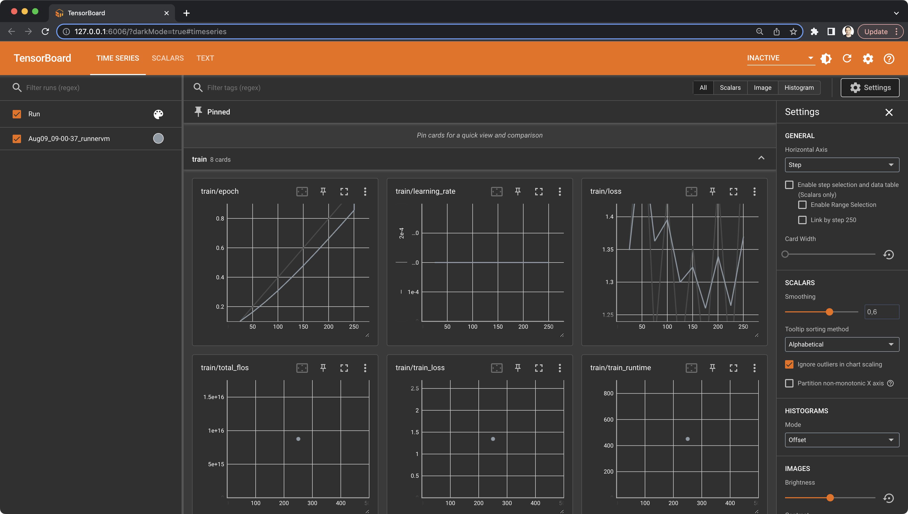

QLoRA¶
This example demonstrates how to fine-tune llama-2-7b-chat-hf,
with QLoRA and your own script, using Tasks.
Prepare a dataset¶
When selecting a dataset, make sure that it is pre-processed to match the prompt format of Llama 2:
<s>[INST] <<SYS>>
System prompt
<</SYS>>
User prompt [/INST] Model answer </s>
In our example, we'll use the mlabonne/guanaco-llama2-1k
dataset. It is a 1K sample from
the timdettmers/openassistant-guanaco dataset
converted to Llama 2's format.
Define the training script¶
Requirements¶
The most notable libraries that we'll use are peft (required for using the QLoRA
technique), bitsandbytes (required for using
the quantization technique), and trl (required for supervised fine-tuning).
accelerate==0.21.0
peft==0.4.0
bitsandbytes==0.40.2
transformers==4.31.0
trl==0.4.7
scipy
tensorboard
sentencepiece
hf-transfer
Load the base model¶
In the first part of our script, we prepare the bitsandbytes config and load the base model along
with its tokenizer, based on the script arguments.
from transformers import (
AutoModelForCausalLM,
AutoTokenizer,
BitsAndBytesConfig,
)
def create_and_prepare_model(args):
bnb_config = BitsAndBytesConfig(
load_in_4bit=args.use_4bit,
bnb_4bit_quant_type=args.bnb_4bit_quant_type,
bnb_4bit_compute_dtype=args.bnb_4bit_compute_dtype,
bnb_4bit_use_double_quant=args.use_nested_quant,
)
model = AutoModelForCausalLM.from_pretrained(
args.model_name,
quantization_config=bnb_config,
device_map="auto",
)
model.config.use_cache = False
model.config.pretraining_tp
tokenizer = AutoTokenizer.from_pretrained(args.model_name, trust_remote_code=True)
tokenizer.pad_token = tokenizer.eos_token
tokenizer.padding_side = "right"
return model, tokenizer
Create a trainer instance¶
In the second part of our script, we prepare the peft config and create the trainer based on the script arguments.
from peft import LoraConfig
from transformers import TrainingArguments
from trl import SFTTrainer
def create_and_prepare_trainer(model, tokenizer, dataset, args):
training_arguments = TrainingArguments(
output_dir=args.output_dir,
num_train_epochs=args.num_train_epochs,
per_device_train_batch_size=args.per_device_train_batch_size,
gradient_accumulation_steps=args.gradient_accumulation_steps,
optim=args.optim,
save_steps=args.save_steps,
logging_steps=args.logging_steps,
learning_rate=args.learning_rate,
weight_decay=args.weight_decay,
fp16=args.fp16,
bf16=args.bf16,
max_grad_norm=args.max_grad_norm,
max_steps=args.max_steps,
warmup_ratio=args.warmup_ratio,
group_by_length=args.group_by_length,
lr_scheduler_type=args.lr_scheduler_type,
report_to="tensorboard",
)
peft_config = LoraConfig(
lora_alpha=args.lora_alpha,
lora_dropout=args.lora_dropout,
r=args.lora_r,
bias="none",
task_type="CAUSAL_LM",
)
trainer = SFTTrainer(
model=model,
train_dataset=dataset,
peft_config=peft_config,
dataset_text_field="text",
max_seq_length=args.max_seq_length,
tokenizer=tokenizer,
args=training_arguments,
packing=args.packing,
)
return trainer
Publish the fine-tuned model¶
In the third part of the script, we merge the base model with the fine-tuned model and push it to the Hugging Face Hub.
from peft import PeftModel
import torch
from transformers import (
AutoModelForCausalLM,
AutoTokenizer
)
def merge_and_push(args):
# Reload model in FP16 and merge it with LoRA weights
base_model = AutoModelForCausalLM.from_pretrained(
args.model_name,
low_cpu_mem_usage=True,
return_dict=True,
torch_dtype=torch.float16,
device_map="auto",
)
model = PeftModel.from_pretrained(base_model, args.new_model_name)
model = model.merge_and_unload()
# Reload the new tokenizer
tokenizer = AutoTokenizer.from_pretrained(
args.model_name, trust_remote_code=True
)
tokenizer.pad_token = tokenizer.eos_token
tokenizer.padding_side = "right"
# Publish the new model to Hugging Face Hub
model.push_to_hub(args.new_model_name, use_temp_dir=False)
tokenizer.push_to_hub(args.new_model_name, use_temp_dir=False)
Put it all together¶
Finally, in the main part of the script, we put it all together.
from dataclasses import dataclass
from datasets import load_dataset
from transformers import HfArgumentParser
@dataclass
class ScriptArguments:
# ...
if __name__ == "__main__":
parser = HfArgumentParser(ScriptArguments)
args = parser.parse_args_into_dataclasses()[0]
dataset = load_dataset(args.dataset_name, split="train")
model, tokenizer = create_and_prepare_model(args)
trainer = create_and_prepare_trainer(model, tokenizer, dataset, args)
trainer.train()
trainer.model.save_pretrained(args.new_model_name)
if args.merge_and_push:
merge_and_push(args)
Define the configuration¶
Here's the configuration that runs the training task via dstack:
type: task
python: "3.11"
env:
- HF_HUB_ENABLE_HF_TRANSFER=1
# (Required) Specify your Hugging Face token to publish the fine-tuned model
- HUGGING_FACE_HUB_TOKEN=
commands:
- pip install -r llama-2/requirements.txt
- tensorboard --logdir results/runs &
- python llama-2/train.py --merge_and_push ${{ run.args }}
ports:
- 6006
resources:
gpu: 16GB..24GB
Run the configuration¶
Here's how you run it with dstack:
$ dstack run . -f finetuning/qlora/train.dstack.yml --num_train_epochs 10
Installing requirements...
TensorBoard 2.14.0 at http://127.0.0.1:6006/ (Press CTRL+C to quit)
{'loss': 1.3491, 'learning_rate': 0.0002, 'epoch': 0.1}
{'loss': 1.6299, 'learning_rate': 0.0002, 'epoch': 0.2}
{'loss': 1.2071, 'learning_rate': 0.0002, 'epoch': 0.3}
dstack will provision the cloud instance corresponding to the configured project and profile, run the training, and
tear down the cloud instance once the training is complete.
Tensorboard
Since we've executed tensorboard within our task and configured its port using ports,
you can access it using the URL provided in the output. dstack automatically forwards
the configured port to your local machine.

Source code¶
The complete and ready-to-run code for the example is available in our GitHub repo.
What's next?¶
- Check the Text Generation Inference and vLLM examples
- Read about tasks
- Browse examples
- Join the Discord server